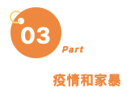
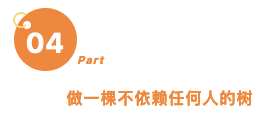

Catherine
Catherine has lived in Australia all her life, from receiving her education to starting her own business to creating the "Around 30" podcast. Having experienced domestic violence, Catherine has experimented with numerous ways to heal and move past her trauma. Today, she lives triumphantly and freely in the realm of her independence.

Raised in clamor and chaos to be a "people-pleaser"
"My parents have been strict with me since I was little, with my mother signing me up for several extra-curricular classes, pushing me academically, hoping I would get into a good college. Our interactions were very traditional." Catherine's father is a college professor, and her mother is in the finance sector. Perhaps because of her parent's occupations, Catherine always grew up in the shadow of stories of "other children": get into a prestigious university; get a well-paying job; marry and have children; achieve the classic definition of success; and we promise you a life without stress and worry.
What made Catherine different from the "other children" was that she grew up in a household of violence - not only would her father abuse her mother, he would physically abuse her as well. This lack of a safe childhood environment caused Catherine to grow up highly sensitive and with low self-esteem. "When I was in high school, I faced incessant verbal bullying, and even as an undergraduate college student, I would remain a "people-pleaser". I didn't know how to correctly deal with friendship. I wanted to become more confident, but I did not know how to."
Catherine, who had noticed her own "cowardice" early on, was finally leaving home for college. With a new beginning, this young girl slowly worked to raise her self-esteem and change her desire to constantly please others, gradually paving a new world for herself.

Breaking boundaries - from the "past me" to the "present me"
Catherine founded an English Exchange Club, her first minor achievement since attending college.
While attending the business school with a lot of Chinese students, she realized that many of them lacked a proper environment to speak English, and founded the English Exchange Club. She invited students of other nationalities and backgrounds to join the club as well. As the club was hosting more events, Catherine received positive feedback, which greatly encouraged her. "Even now I believe that this is a very purposeful club; not only has it improved the English proficiency of the Chinese students, but it has also increased their exposure to Western culture. Even though I graduated in 2016, there are still many people who remember being in that club.
With constant encouragement, Catherine wanted to explore and try different things. Thus, she began working part-time: from 小黑工 in Chinatown to a salesperson for a healthcare company, to a store assistant in a luxury store, from an hourly salary of 8 Australian dollars to 25 Australian dollars. It goes without saying that her experiences were bitter, but she felt that something melted and disappeared during her change of roles and transition from the "past me" to the "present me".
At the same time, being robbed and facing a legal trial added significant meaning to Catherine's college career. "Because of the robbery, I went to the police station to make a statement; however, the most memorable part would be the legal trial with my landlord. When my rent was due, he charged me 1700 Australian dollars without reason, so I spent one entire month trying to defend my rights. "Without legal training, I did not know how to sue him, so I collected information endlessly. Unfortunately, I was at a low point in my life after a breakup, and during exam season, but the trial ended with a desirable legal outcome."
In the same year, Catherine finally persuaded her mother to get a divorce. "I wanted my mom to get a divorce a long time ago. If she did not get the divorce, her life could still be in danger. In the most serious incident, she had to be hospitalized. She said she didn't want to get a divorce, that it was for me, but I think it was for a more traditional reason." Society's norms, the opinions of others ... these confinements that tethered her for twenty years were finally broken.
Counting back the unforgettable experiences of the past, the good and the bad. After being encouraged, Catherine's mother began dancing ballet again. The choices that Catherine was forced to make, defending her rights alone, became positive feedback for her growth, allowing this timid girl to realize her self-worth and become more confident. "Change happened. One can become very confident, and not want to bend to the will of others. I've experienced too much, so I forgot those bad memories; women are very powerful."

The unexpected pandemic and domestic violence
Catherine received her first job, and began a romantic relationship - they met each other from being in the same office building. "He noticed me first, and asked me out to eat together, and about two weeks later we transitioned to a serious relationship".
Catherine's boyfriend's calm demeanor and kind personality allowed her to "let her guard down". "Our romantic relationship lasted from May to November 2019. Even though we faced a few challenges in daily life, none of them were serious problems. In the fall of that year, I visited him when he went back home for medical reasons. I met his parents, who were very kind to me, and I felt they were suitable. From a crush to a serious relationship, Catherine, like so many other girls, was excited about what the future held, and decided to move in with him.
In February of 2020 when the Coronavirus Pandemic began, Catherine's company required employees to work from home. However, Catherine's boyfriend required normal work hours, so they decided to return to their small home. In March, the two began to argue due to differences in living habits and different ideologies. The couple fought one per week. "I gradually found out he was selfish, and a very traditional misogynist. For example, he would leave me the kitchen and dirty areas to clean, while he would do the easier chores. He would use "not being able to cook" as an excuse to make me cook.
Over time, Catherine discovered more flaws in her boyfriend, and that they had some opposing views. "I was getting ready to start an online business, but he was adamantly opposed to it, and would diminish my successes. In one argument, he said that women must have children, and when I said I did not want to have children, he said they would have to break up."
In May, their relationship continued to worsen. Catherine's boyfriend began to control Catherine's social life, including dinners with her female friends. "No communication of longer than 10 minutes with the opposite sex", and "no leaving home for more than one hour" ... these requirements caused Catherine to be more on guard of his controlling behavior, and she began considering moving out.
The first incident that "sounded her alarm" was domestic abuse: "I cannot accept him turning arguments into physical violence. One time he accidentally gave me a nosebleed, told me that he would get revenge on me, and clawed a red mark onto my leg. I define this as domestic violence, a kind of intentional violence. I see that he was no longer able to control his body, and I felt seriously threatened by him.
As if a recurring nightmare, her boyfriend's abusive behavior caused Catherine to remember her father's anger and out-of-control behavior. Her father's abuse of her mother, and her boyfriend's abuse of her, seemed to exist in the same odd cycle. After much internal debate, Catherine packed her bags and decided to leave in May of 2020.
"The moment I set foot in the car,
I felt the sky become brighter."

An awakened 30-year-old female entrepreneur: becoming an independently standing tree
"I founded 'Around30' because at the time I loved listening to podcasts. Last November, I was discussing the issue of anxiety about reaching the age of 30 for women. Issues like pressuring women into marriage, workplace discrimination, and the objectification of women in all facets of society. I believe this group of women needed to be seen and heard, so I created this podcast to focus on the lives of women in their 30s.
Through one platform, one channel, Catherine is using her unique way to awaken more women and inspire others. There are three months until Catherine's 30th birthday. "I am looking forward to it; 30 is a great age, and I believe I can continue to live out endless possibilities.
Catherine sees a bright future in the video of her life. The video depicts the shadow of trees, and you can hear birds chirping. The Catherine in this video is confident and bright.
Catherine's complicated past may be a build-up for the rest of her life, the accumulation of strength, finding a gap in the vicious loop of domestic violence, and encouraging more women to become independent through her podcast.
This is a long road,
but she is luckily seeing the sun.
---
- Interviewers：赵晚然、贺梦凡、Jenny
- Author: 贺梦凡
- Revisers: 张妮、张紫璇、郭宇欣 、董智、秦科
- Translator: Wiley Luan
- Proofreader: Weiyu Dai